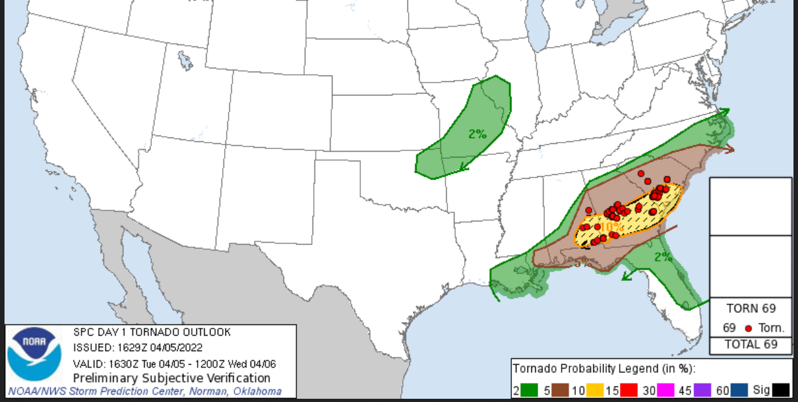
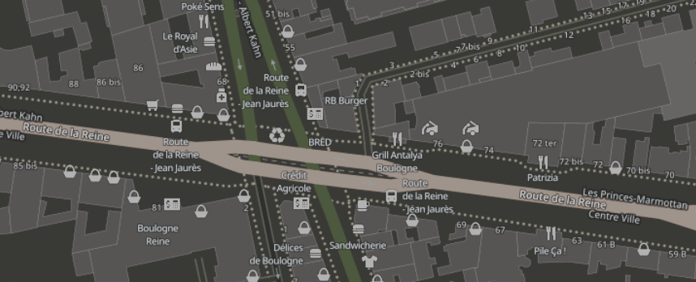

This is a glance at some of the projects I worked on, and the skills used.
NOAA Severe Weather Prediction

- A machine learning pipeline to detect damaging weather events
- Python scripts for gathering atmospheric weather data(NOAA) and saving to AWS s3 buckets
- Inputted into machine learning pipeline for converting 25+ variables into risk probabilities
- Several iterations of models, loss functions, feature selection
Global Building Footprints

- Development of high quality map dataset of all buildings across the globe
- Extensively learned about data usage licenses and rights, such as creative commons, fair use, etc.
- Determined there were no commercially usable datasets of this kind (without limitations), so we built our own
- Took multiple approaches, LiDAR, satellite imagery + Machine Learning, accessing and gathering government datasets, etc.
- Used ArcGIS Pro for validation and cleaning